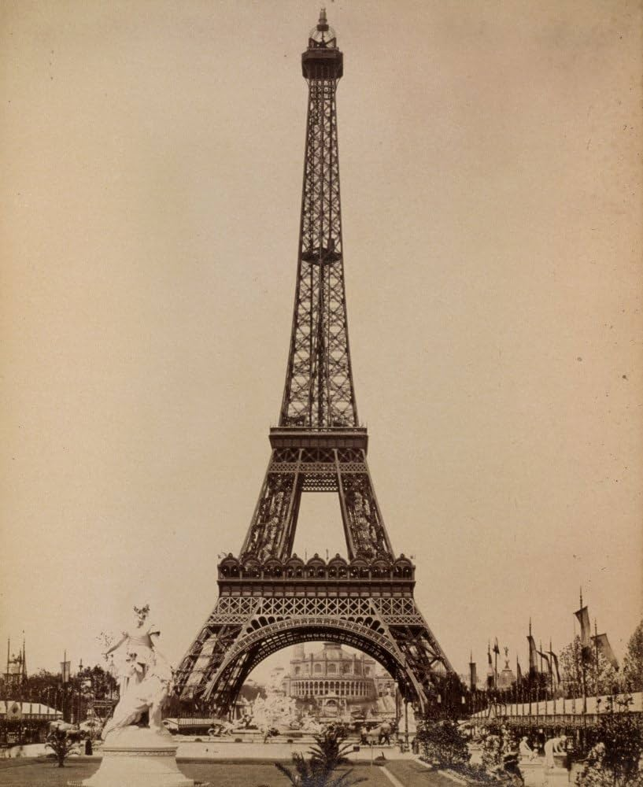
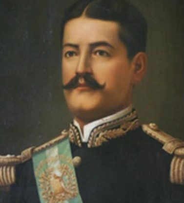
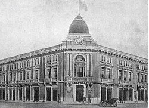
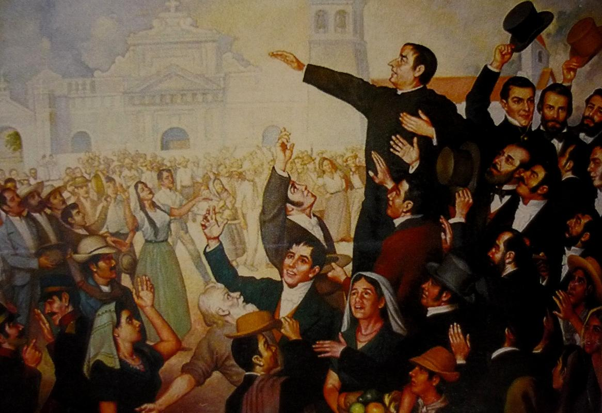

Exposición Centroamericana de 1897
¿Qué fue la Exposición Centroamericana?

La Exposición Centroamericana fue un evento internacional realizado en la Ciudad de Guatemala en 1897 durante el gobierno de José María Reina Barrios. Su objetivo era mostrar el progreso económico, industrial y cultural de Guatemala y promover la inversión extranjera.

Las Exposiciones Universales
Torre Eiffel (París 1889)
Las Exposiciones Universales surgieron en el siglo XIX como eventos internacionales destinados a mostrar los avances tecnológicos, industriales y culturales de los países participantes. La primera se celebró en Londres en 1851 y sirvió de inspiración para numerosos eventos similares alrededor del mundo.

alt="" width="2000" class="cards"/>José María Reina Barrios
José María Reina Barrios fue presidente de Guatemala entre 1892 y 1898. Impulsó importantes proyectos de modernización y promovió la Exposición Centroamericana como una oportunidad para mostrar el progreso del país ante la comunidad internacional.

Cronología de la Exposición Centroamericana
1851 - Primera Exposición Universal en Londres.
1889 - Exposición Universal de París.
1892 - Reina Barrios asume la presidencia.
1897 - Inauguración de la Exposición Centroamericana.
1898 - Final del gobierno de Reina Barrios.

Legado
Aunque enfrentó dificultades económicas, la Exposición Centroamericana dejó un importante legado histórico para Guatemala. Representó uno de los mayores esfuerzos por proyectar una imagen moderna del país y fortalecer su presencia internacional.